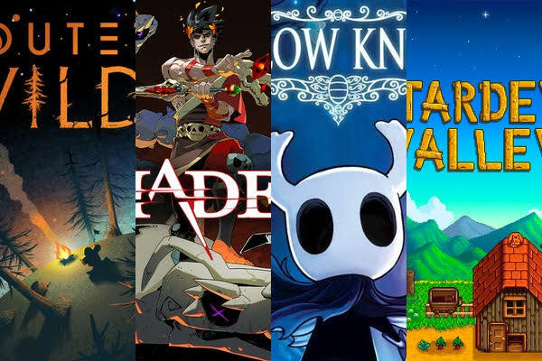

I love indie games because they feelpersonal, creative, and full of surprises. These are the three titles I keep coming back to when I want a game with heart, style, and smart design.

My rule is simple:try the first hour before giving up. Great indie games often start small, then surprise you with smart mechanics, strong music, and stories that stay with you.
Built by Juan ; BMIS 235